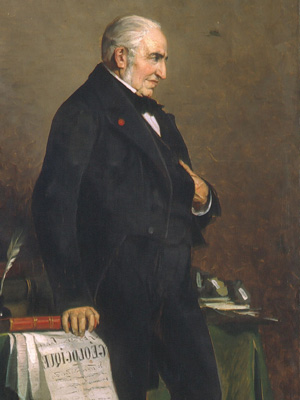
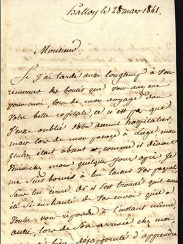

(1783–1875) was a Belgian geologist.
The Cretaceous ( "creta" meaning chalk) is a period from Earths past about 145 to 66 million years ago. The Cretaceous period follows the Jurassic period and both are in the Mesozoic Era. But the Cretaceous period was the last in this era and the longest, spanning 79 million years.
The climate of this time period was relatively warm making it the perfect environment for marine life and life on land. Creatures like marine reptiles, ammonites and rudists swam the seas. dinosaurs like Tyrannosaurs Rex and triceratops walked the land. During this time period early mammals, birds and flowering plants also appeared. Ending this period with a mass extinction called the Cretaceous-Paleogene extinction event in which most land dinosaurs and large marine reptiles died out. This needed the Cretaceous period which was can see in geological evidence called the K-Pg Boundary which separates the Mesozoic and Cenozoic Eras.

